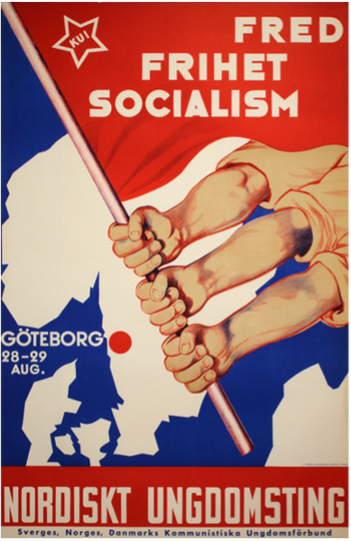
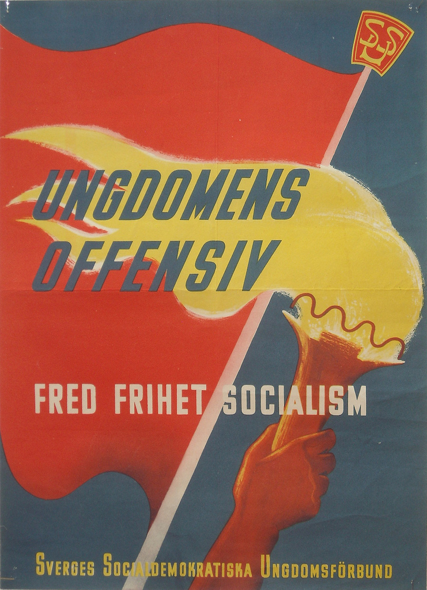
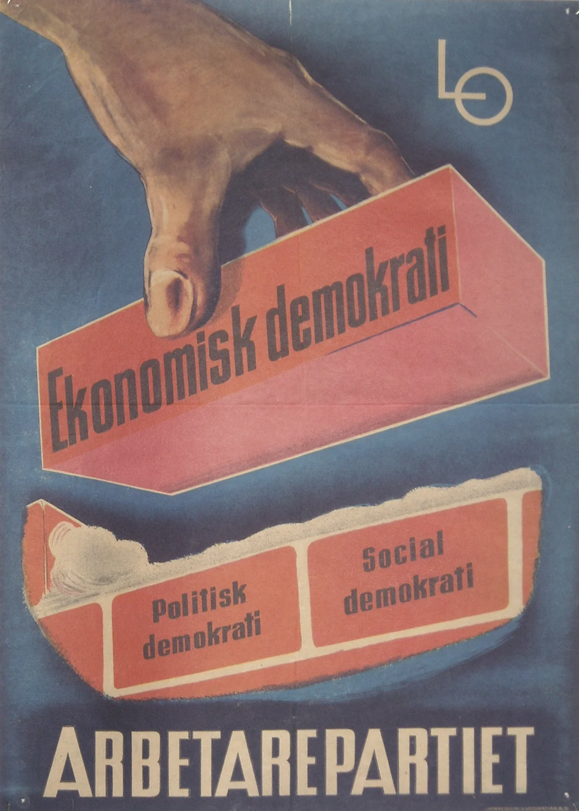
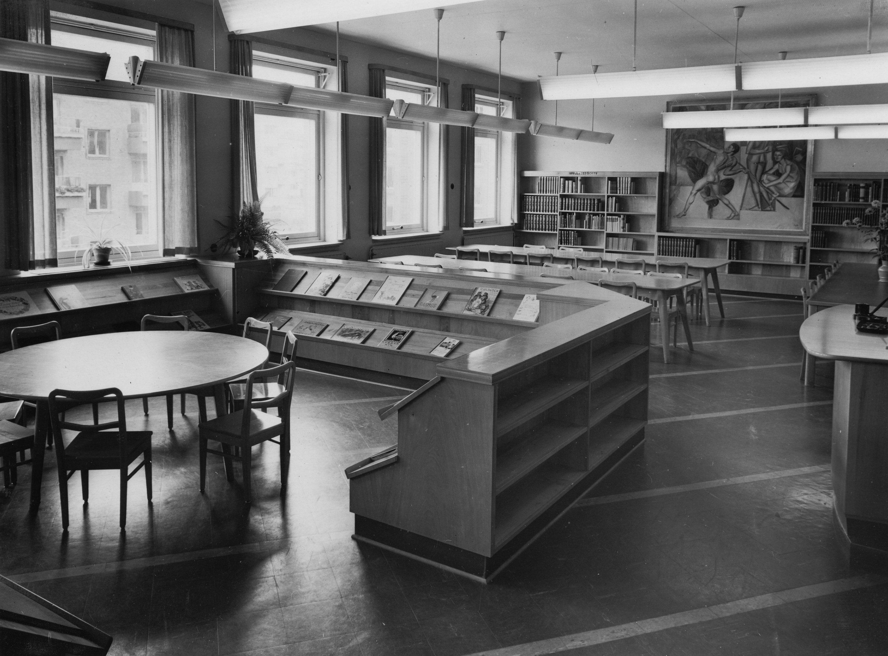
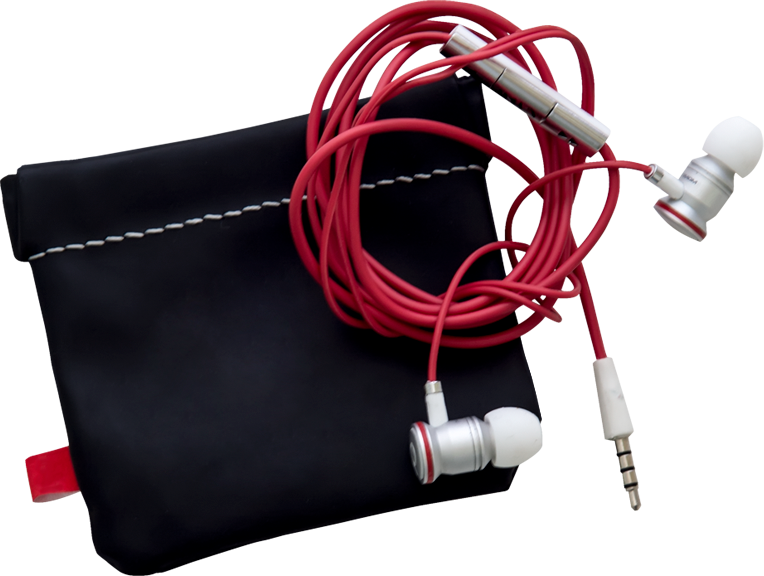
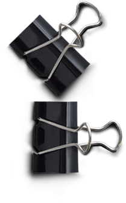

The building & history
Built in Malmö in 1893, This was Sweden’s first Folkets Hus.
On a cold thursday in 1953, Frank Sinitra sang there



The town’s young socialists used to meet there.

It was the perfect setting to talk about the need for young people to claim their space in society.
The Process
OCG Programme
2022 Södra Communityteatern
